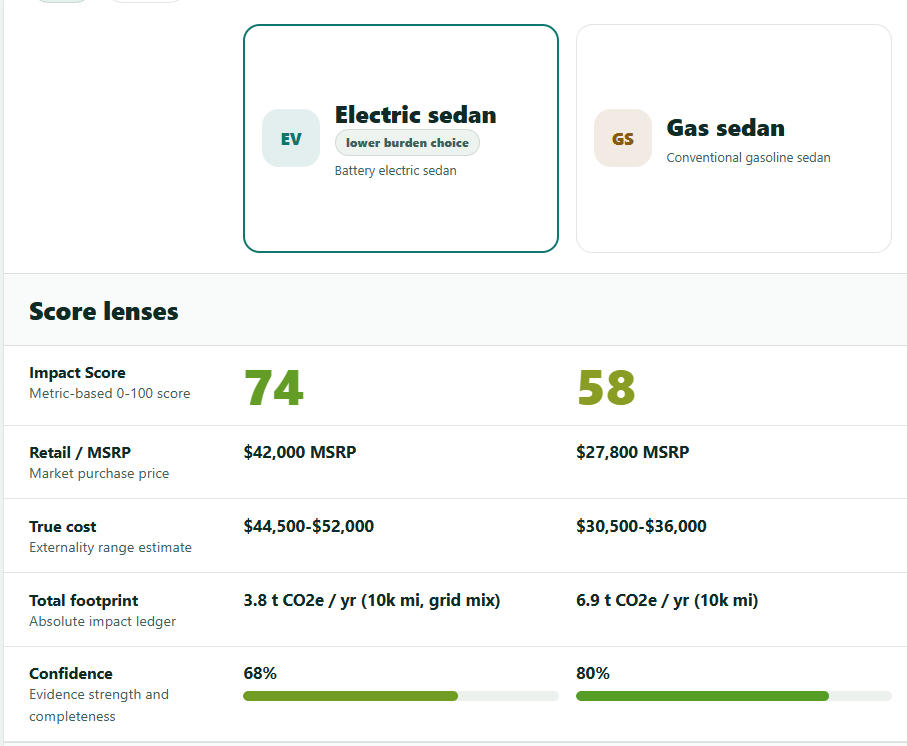

Scientific research
Thousands of studies contain pieces of the puzzle.
I'm building an open, transparent platform to help us understand the environmental and social consequences of the things we make, use, and depend on.
I've already built the first working prototype. I'm raising $20,000 to turn it into a public version that anyone can depend on to make well-informed decisions .

Thousands of studies contain pieces of the puzzle.
Agencies collect enormous amounts of environmental information.
Companies publish increasingly detailed sustainability information.
But it's fragmented. Different sources measure different things, use different assumptions, and cover different parts of a product's lifecycle. The information exists. We need a better way to connect it.
What if we could connect information about materials, products, companies, resources, processes, ecosystems, and people—and trace the relationships between them?
An electric vehicle requires rare minerals.
A gasoline vehicle requires fossil fuels.
Solar panels require energy and materials.
Food production affects land, water, climate, and biodiversity.
It's tempting to look at tradeoffs like these and give up.
The answer isn't to stop asking questions — it's to understand the full picture well enough to make better choices.
Explore impacts across the lifecycle rather than reducing everything to one number.
Connect products, resources, companies, and processes.
See where information comes from and how it was evaluated.
Help me build the foundation
I'm intentionally starting small. I don't want to build a large organization before I know that the system works. I want to build, test, learn, and grow from there.
Add fundraising capacity, connect with research institutions, demonstrate the platform, and develop pilot partnerships.
Bring on senior programming support, develop the beta platform, integrate initial research/data sources, and begin working with external users.
I will track how funds are used and report progress toward each milestone. My goal is not simply to raise money and build a large organization — it's to turn funding into useful environmental information as quickly, responsibly, and transparently as possible.
Disclosure: The platform does not currently have 501(c)(3) status. Contributions through these links are direct personal project contributions, not charitable donations, and should not be treated as tax deductible.

I've spent much of my career working with complicated systems—designing buildings, managing construction projects, solving problems, and figuring out how different pieces fit together.
As I've studied environmental science and software development, I've become increasingly interested in a different kind of problem: how do we make sense of everything we already know about our impact on the planet — and actually use it to do better?
Imagine being able to trace a product back to the resources it came from.
Understand what happened along the way.
See the environmental and social consequences.
Compare different pathways.
Understand what we know—and what we don't.
That's the kind of resource I'm trying to build.
I'm starting with a working prototype and a $20,000 goal. If you believe we need better ways to understand our impact on the world, I'd love your support.